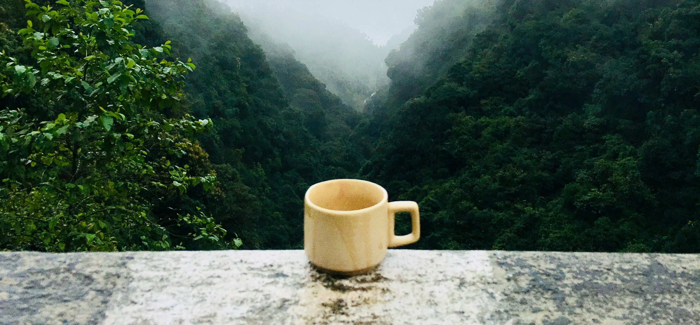

Odkrycie kawy
Owoce kawowca wykorzystywane były w Etiopii już w I tysiącleciu p.n.e. Spożywano je gotowane z dodatkiem masła i soli, lecz nie uprawiano, tylko zbierano ze stanowisk naturalnych. Prawdopodobnie kawę odkrył lud Oromo, zamieszkujący etiopski region Kaffa[1]. Przypuszczalnie w XIII lub XIV wieku przywiezione zostały przez kupców arabskich do Jemenu, który do dziś dostarcza najdroższą kawę. Prawdopodobnie tam opracowano metodę preparowania nasion przez prażenie i wytwarzanie z nich napoju, który Beduini rozpowszechnili w całej Arabii. Z odkryciem kawy wiążą się dwie legendy. Pierwsza przypisuje związane z tym zasługi sufiemu Shaikh ash-Shadhilemu. Miał on w czasie swojej wędrówki po Afryce przypadkiem natrafić na stado wyjątkowo pobudzonych kóz. Z ciekawości spróbował zjadanych przez nie owoców, poznając ich niezwykły wpływ na organizm człowieka. Druga, bardzo podobna historia jako odkrywcę podaje etiopskiego pasterza o imieniu Kaldi.
źródło:pl.wikipedia.org/wiki/Kawa
Nowa używka na Bliskim Wschodzie
Już w końcu XV wieku położony na południowym krańcu Morza Czerwonego arabski port Al-Mucha (bardziej znany jako Mokka) był dużym ośrodkiem handlu ziarnami rośliny zwanej kohwet. Wraz z ekspansją arabską zwyczaj picia kawy rozpowszechnił się na całym Bliskim Wschodzie. Początkowo budził on wiele nieufności, czy wręcz niechęci. Spożycie kawy zostało zabronione w Mekce w roku 1511, a w Kairze w 1532. Wobec szybkiego wzrostu popularności napoju zakazy wkrótce zniesiono. W 1554 w Stambule otwarto pierwszą kawiarnię. O ile w Arabii kontrowersje wokół nowej używki szybko zanikły, o tyle nad Bosforem jej kariera rozwijała się znacznie wolniej. Pobudzające właściwości palonych ziaren bywały obiektem krytyki religijnych ortodoksów, a pierwsze kawiarnie stawały się nieraz forami burzliwych dyskusji, co niepokoiło sułtanów. Restrykcje ustały u schyłku XVI wieku. Zarazem Imperium Osmańskie jako pośrednik w handlu stało się mocarstwem kawowym.
źródło:pl.wikipedia.org/wiki/Kawa
Kawa w Europie i Ameryce
Jako pierwszy Europejczyk kawę opisał niemiecki botanik i podróżnik Leonard Rauwolf. W 1573 roku rozpoczął on trzyletnią podróż po Bliskim Wschodzie. Celem eskapady było odkrycie nowych ziół i lekarstw dla kompanii kupieckiej jego szwagra, Melchiora Manlicha. Rauwolf powrócił z wieloma cennymi towarami, jak również obfitymi zapiskami dotyczącymi tureckich zwyczajów. Na temat kawy wyraził się w następujący sposób: Bardzo dobry napój zwany przez nich „Chaube”, który jest niemal tak czarny jak inkaust i bardzo dobry na dolegliwości, szczególnie żołądkowe. Spożywają go oni o poranku, w otwartych miejscach, przed wszystkimi i bez najmniejszej oznaki strachu czy ostrożności. Napój popijają małymi łyczkami, tak ciepły jak to tylko możliwe, z glinianych i porcelanowych kubków. Duże znaczenie dla rozpowszechnienia wiedzy o używce miały również zapiski włoskiego botanika i lekarza Prospera d’Alpino. Towarzyszył on weneckiemu poselstwu do Egiptu i po powrocie opisał lecznicze działanie kawy. Prawdopodobnie to dzięki niemu nazwa „caffè” przeniknęła do większości języków zachodniej Europy (ang. coffee, fr. café). Trudno określić dokładnie kiedy kawa po raz pierwszy trafiła do Europy. W oparciu o zapiski Leonarda Rauwulfa z 1583 roku można stwierdzić, że stała się ona dostępna jeszcze w XVI wieku. Jej import był zasługą dwóch kompanii wschodnioindyjskich: brytyjskiej i holenderskiej. Pierwszą kawiarnię w Anglii otwarto w Oksfordzie w roku 1650. Należała ona do osmańskiego Żyda imieniem Jakub (ang. Jacob lub Jacobs). W Londynie podobny przybytek rozpoczął działalność dwa lata później przy alei świętego Michała. Na kontynencie kawa rozpowszechniła się ze sporym opóźnieniem. Pierwszy raz sprowadzono ją do Francji prawdopodobnie dopiero w roku 1644. W 1669 roku napój poznały elity paryskie na przyjęciu wydanym przez posła osmańskiego Mustafę Paszę. Pierwszy kafehaus w stolicy kraju otwarto w 1671 roku. W tym czasie w Anglii działało już ponad 3000 kawiarni. Napój zyskiwał także rosnącą popularność za oceanem. W roku 1670 rozpoczęła działalność pierwsza kawiarnia w Bostonie. Po zwycięstwie pod Wiedniem (1683) Jerzy Franciszek Kulczycki założył pierwszy kafehaus w stolicy Austrii. Legenda mówi, że zrobił to korzystając z zapasów kawy porzuconych przez uciekających Turków. Następnie pomógł on spopularyzować zwyczaj dodawania do napoju cukru i mleka. Do niedawna w Wiedniu istniała tradycja wywieszania portretu Kulczyckiego (niem. Kolschitzky) w oknach kawiarni. Ostatnio mówi się, że pierwszym właścicielem kawiarni w Imperium Habsburgów był jednak Ormianin Johannes Diodato[2]. Pierwszą kawiarnią w Salzburgu była istniejąca do dziś Café Tomaselli. Kawiarnia ta jest najstarszą do dziś istniejącą kawiarnią Europy Zachodniej. Bywali w niej: Wolfgang Amadeus Mozart, Michael Haydn, Hugo von Hofmannsthal i Max Reinhardt. Nowa używka budziła na starym kontynencie wiele kontrowersji. Była produktem pochodzenia arabskiego, niektórzy widzieli więc w niej dzieło szatana. Na początku XVII wieku na temat kawy wypowiedział się sam papież Klemens VIII, za którego przyzwoleniem napój ten wkroczył do świata chrześcijańskiego. W XVII i XVIII w. wielkie potęgi kolonialne rozpoczęły uprawę kawowca w swoich koloniach. Holandia w 1658 roku założyła pierwsze plantacje na Cejlonie. Następnie rozszerzyła uprawę na Jawę, z której rozprzestrzeniła się ona na cały Archipelag Sundajski. Francja pierwsze plantacje założyła na Martynice. Wkrótce uprawę kawy rozpoczęto również w Gujanie Francuskiej. W roku 1719 Portugalczycy wykradli z Gujany sadzonki i założyli pierwsze plantacje w Brazylii. Dzięki nim do roku 1800 kawa zmieniła się z używki dla elit w ogólnodostępny napój dla każdego. Przez cały wiek XIX i pierwsze dekady XX wieku Brazylia pozostawała głównym producentem i niemal monopolistą na rynku kawy. Dopiero w kolejnych latach polityka utrzymywania wysokich cen otworzyła drzwi dla kolejnych państw: Kolumbii, Gwatemali i Indonezji. Pod koniec XIX wieku Wiedeń posiadał ponad 1200 kawiarni. Obecnie kawa jest jednym z najpopularniejszych na świecie napojów. Wypija jej się około 400 mld filiżanek rocznie.
źródło:pl.wikipedia.org/wiki/Kawa
Jesteś na stronie od godziny: